You can also download a PDF copy of this lecture.
An outlier is an observation of a variable that is “extreme” relative to a given distribution. The question then is how do we identify which observation(s) is/are outliers?
We might define an outlier as any observation below a relatively small percentile, or above a relatively large percentile. One common definition is to identify the “middle 95%” of observations as not being outliers. So we can define an outlier as any observation that meets either of the following criteria.
Example: The following plot shows the cumulative distribution of a sample of observations of eruption durations for Old Faithful. (Note: This plot looks slightly different from one we saw earlier because this time I did not round the durations to the nearest 10th of a minute.) 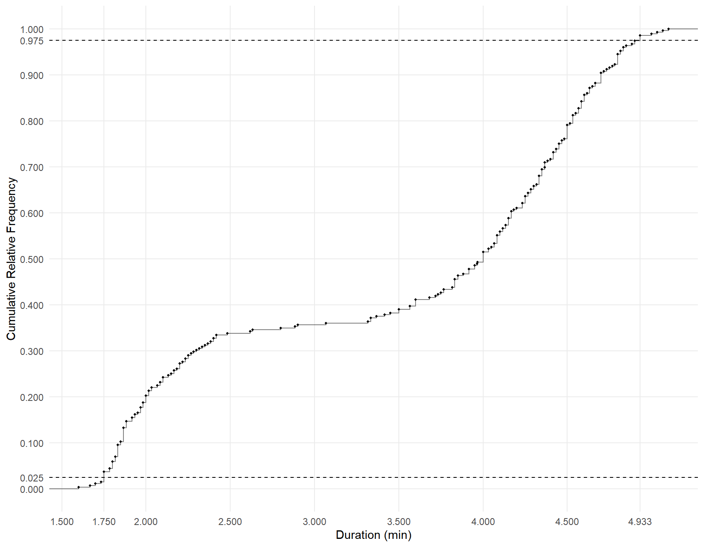
Below I have “zoomed-in” on the 2.5th and 97.5th percentiles. 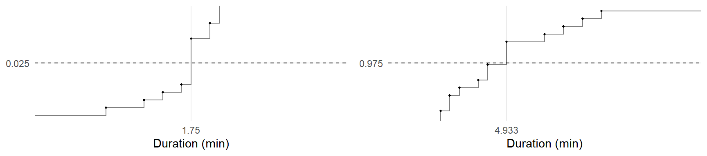
Example: Cumulative distributions and box plots of the data from the study on creativity and motivation. What scores would be outliers for each distribution if we use the 2.5th and 97.5th percentiles? 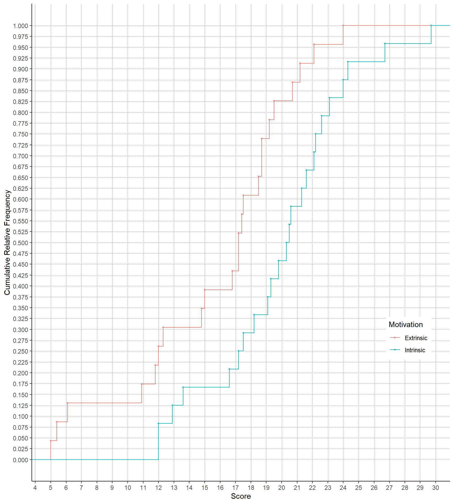
For an approximately normal distribution, we can use the empirical rule to find the “middle 95%” of observations as those observations within two standard deviations of the mean. So an outlier is any observation that meets either of the following two criteria.
Example: Consider the following approximately normal distribution of a variable \(x\). The distribution has a mean of 50 and a standard deviation of 10. How do we know that, say, 25 and 72 are outliers, but that 36 and 62 are not? 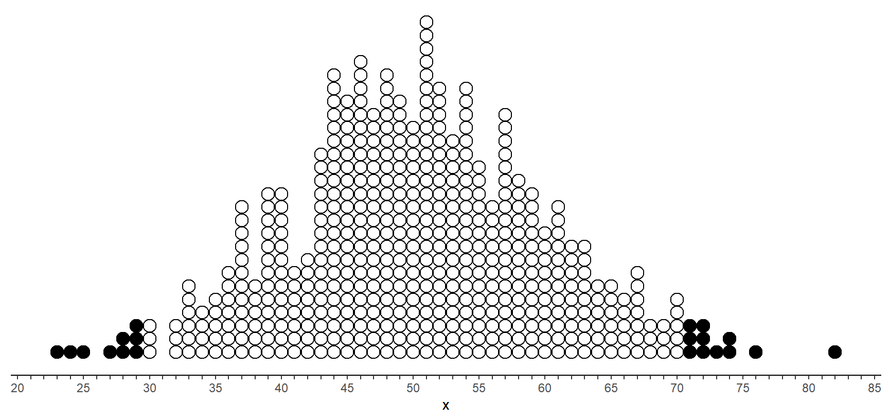
Example: Consider the following distribution of a quantitative variable \(x\). The distribution has a mean of 100 and a standard deviation of 12. 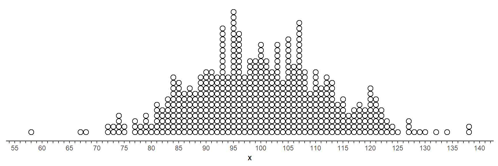 Which observations are outliers?
Example: Suppose that the distribution of the heights of Hobbits in the Shire is approximately normal/bell-shaped with a mean of 90 cm and a standard deviation of 10 cm. Frodo is 107 cm tall, and Pippin (after consuming Ent-draughts) is 137 cm. Are either of these Hobbits outliers? How short or tall would a Hobbit need to be to be an outlier?
The empirical rule only applies to approximately normal distributions. For a non-normal distribution a similar approach we can use is based on the five number summary. Here an outlier is any observation that meets either of the following two criteria.
Recall that \(Q_3-Q_1\) is the interquartile range (a measure of variability).
Example: Consider the following distribution of a variable \(x\). The first quartile is \(Q_1 =\) 9.6 and the third quartile is \(Q_3 =\) 10.85. Which observations are outliers? 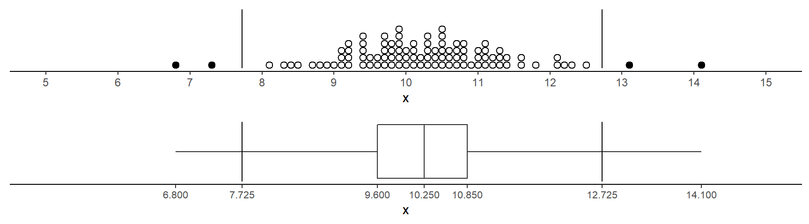
Example: Consider the following distribution of a variable \(x\). The first quartile is \(Q_1\) = 49.6 and the third quartile is \(Q_3\) = 50.85. Which observations are outliers? 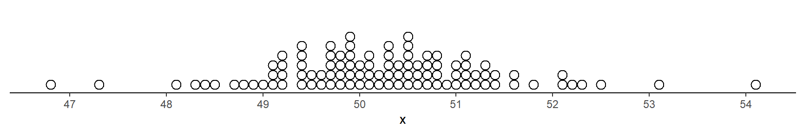
Example: Consider the following distribution of a quantitative variable \(x\). The first quartile is \(Q_1\) = 6 and the third quartile is \(Q_3\) = 14. Which observations are outliers? 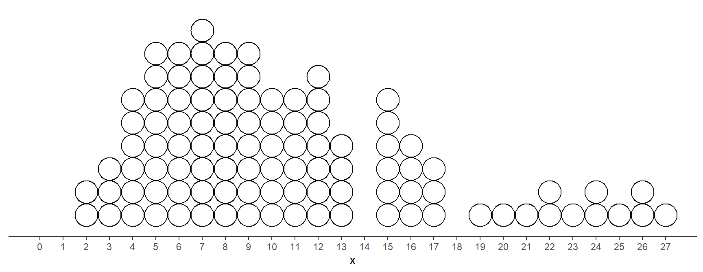
To say that a summary measure is resistant means that it is not (much) influenced by extreme outliers.
Resistant summary measures include the median and interquartile range.
Summary measures that are not resistant include the mean, variance, standard deviation, and range.
Example: Consider a forestry survey to estimate the mean volume of trees in a given region. The goal of such a survey would be to use the mean from the sample of observations of tree volume (a statistic) as an estimate of the mean from the population of observations of tree volume (a parameter). This is an example of statistical inference.
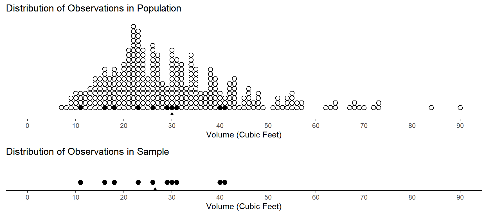
The means for each distribution are shown by the triangles. The distribution of observations in the population has a mean of 30. The distribution of observations in the sample has a mean of 26.5.
But clearly the estimate we get would depends on the sample. We could in theory consider a distribution of estimates from many samples. This is an approximation of what is called a sampling distribution (more on that later).
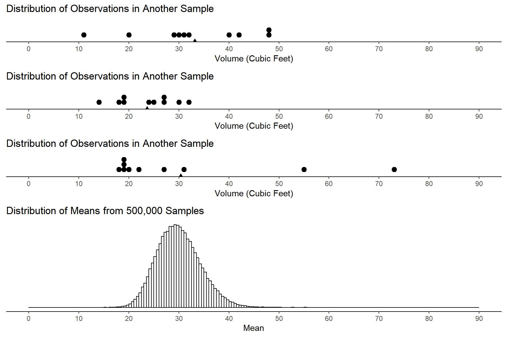
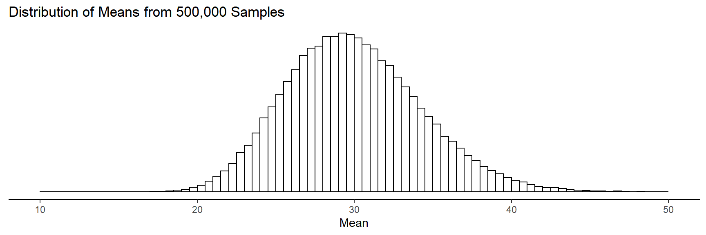 This distribution has a mean of 30 and a standard deviation of 4. Notice that the mean of this distribution is equal to the parameter being estimated. According to the empirical rule, between what two values would we find about 95% of the estimates?
The margin of error is the largest distance between the parameter and an estimate that is not an outlier. What is the margin of error here?